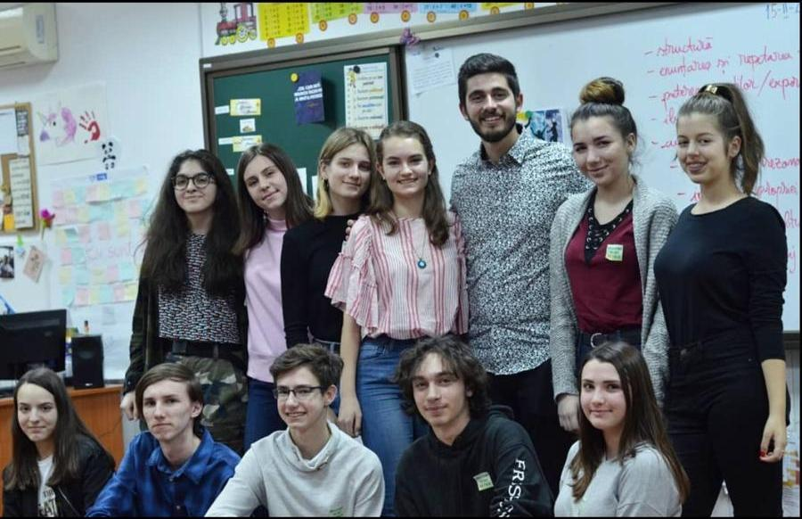
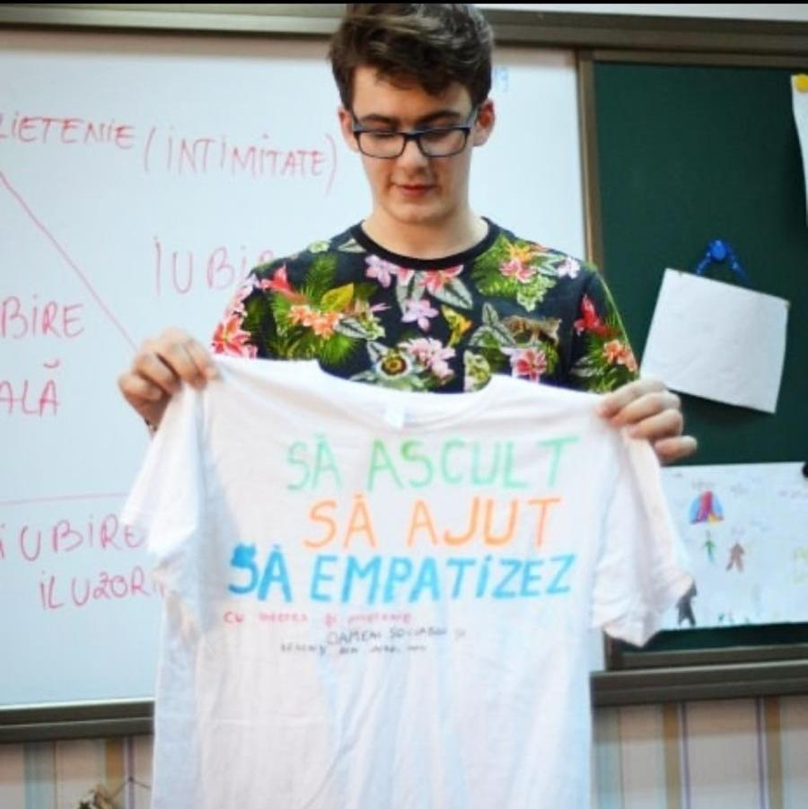

Welcome to my HC talk
Happy Camps Squad este familia care dă tinerilor de pretudinteni valoare timpului lor liber prin sport, educație non-formală, voluntariat și bineînțeles, multă distracție.
Ca adolescenți, auzim adesea întrebări legate de școală și educația pe care o primim și cu totii suntem mai mult sau mai puțin încântați. În această perioadă trebuie să învățăm să alegem ce ne ajută și ce ni se potrivește nouă ca persoane.

Aud mai des de cât mi-aș dori afirmații de tipul ‘Da, dar nu mă descurc cu vorbitul în public’, ‘Uite ce ușor îi este lui să cunoască oameni’, ‘Am trac’, etc. Răspunsul meu este simplu : ‘Happy Camps ! ’. Educația non-formală este foarte importantă pentru formarea noastră ca persoane și pentru a ne dezvoltă abilitățile, și de asemenea una dintre direcțiile principale ale acestui club.
Astfel, noi am creat ‘Welcome to my HC Talk’, un eveniment unde alături de profesori specializați în public speaking, am început pas cu pas să explorăm acest subiect. Indiferent dacă veneai că să ții un discurs sau doar că să asculți, erai primit cu brațele deschise și aveai ocazia să înveți ceva folositor.
Am participat la prima ediție a acestui eveniment și am venit mai mult din curiozitate și doar ca să ascult. Am rămas surprins când mi-am văzut prietenii pășind fără teamă în fața noastră și începând să vorbească despre un subiect la alegere. La finalul fiecărui discurs aplaudam, iar apoi trainer-ul nostru, Emi, îi spunea ce i-a plăcut și ce poate îmbunătăți. Mi-a plăcut atât de mult încât am decis imediat că la ediția următoare să vin și eu pregătit cu un mic discurs.
Atmosfera creată nici nu poată fi descrisă în cuvinte, întrucât toți ne simțeam că într-o familie și eram dornici să învățăm și să-i ajutăm pe ceilalți și astfel nimeni nu s-a simțit criticat sau inferior. Un factor major care a influențat spiritul nostru a fost așezarea noastră. Când am auzit că evenimentul va fi într-o sala de clasa mă așteptăm să stăm în bănci, însă când am intrat în sala am văzut scaune așezate în semicerc, Emi însuși stand în rând cu noi. Astfel, am avut ocazia de a vorbi și de a ne purta mai liber, fără să avem senzația că vom fi certați, întrucât eram acolo printre prieteni și ca să învățăm ceva nou pentru toți.
Să înveți despre astfel de abilități la vârstă aceasta este ceva extraordinar, întrucât mai ales acum simțim nevoia de a ne face prieteni sau de a ne face înțeleși față de ceilalți, iar lumea are nevoie de acest lucru. De aceea, participăm la evenimente sau proiecte de educație non-formală și apoi povestim mai departe, sau ajungând chiar să dezvoltăm noi propriile idei de proiecte.
Sunt lucruri care nu se învață în școli, dar o să ne folosească enorm în viață și de aceea educația non-formală este foarte importantă, și sper să văd cât mai multe proiecte legate de această direcție în viitor.

Articol scris de Mircea Gavrizi